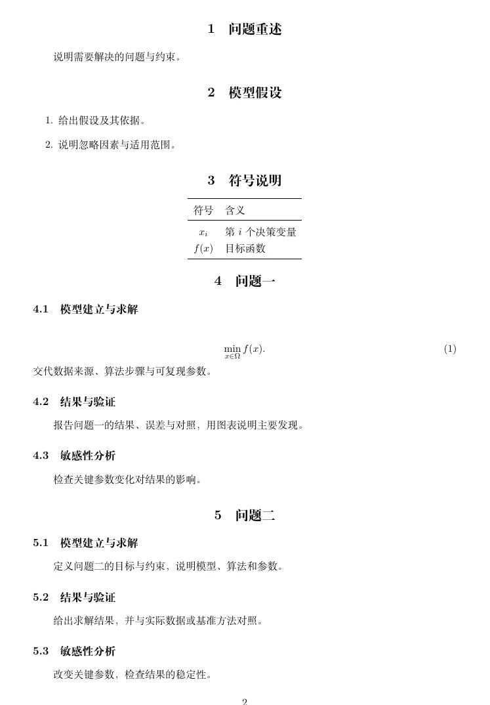
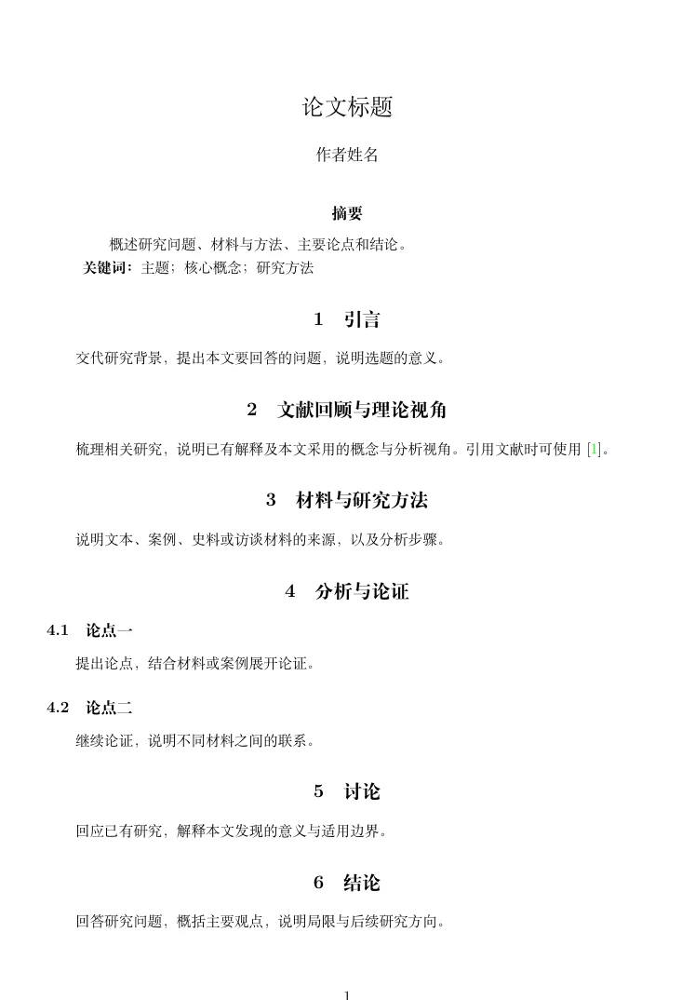
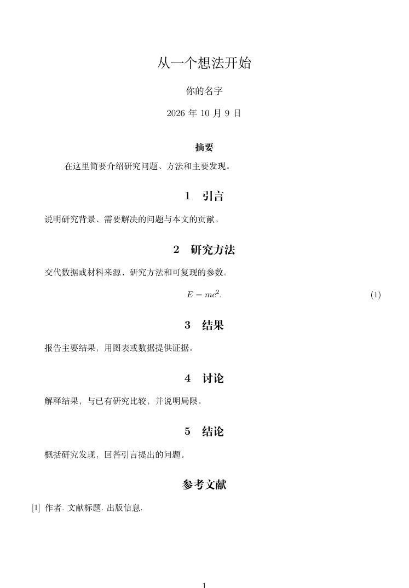
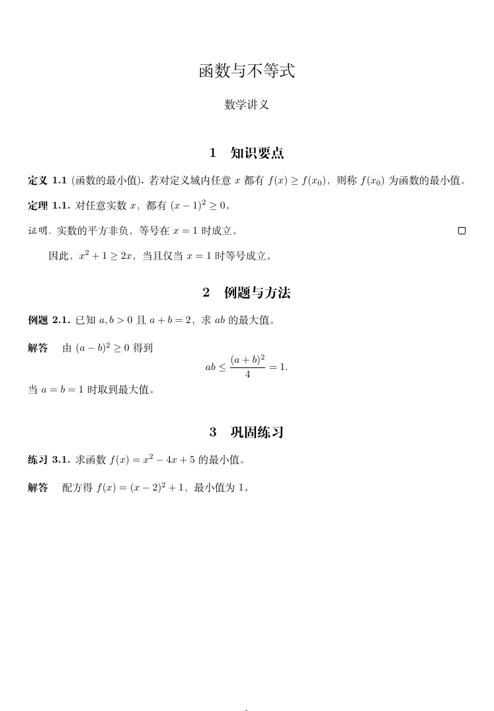

数模论文模板
问题一至四：建模求解、结果验证、敏感性分析。
专为数学建模打造的轻量 LaTeX 一键编译器
常用模块一键插入，图片直接粘贴，源码与 PDF 双击互跳，支持局域网协作和 AI 修改、编译。
下载 Windows 版空行悬停＋号，插入摘要、章节、公式、三线表和图片。蓝色标出可填位置，短提示告诉你这里写什么。
正文、标题、分点、公式和表格自动识别。悬停看清修改范围，点 A+ 放大字号，源码和 PDF 一起更新。
改文件名，点选插入位置。图片保存与 LaTeX 代码一起完成。
房主开启房间，同伴申请加入。章节、参考文献和图片在同一个项目里同步。
接入 MCP，直接告诉 AI 要改什么。读取文稿、修改代码、编译和检查错误，由它调用 EasyLatex 完成。
同样提供 DeepSeek Harness、WorkBuddy 接入配置。也可在应用内填写 API，使用兼容的模型服务。

问题一至四：建模求解、结果验证、敏感性分析。


文科论证与理科研究，分别准备论文结构。

定义、定理、证明、例题与练习。